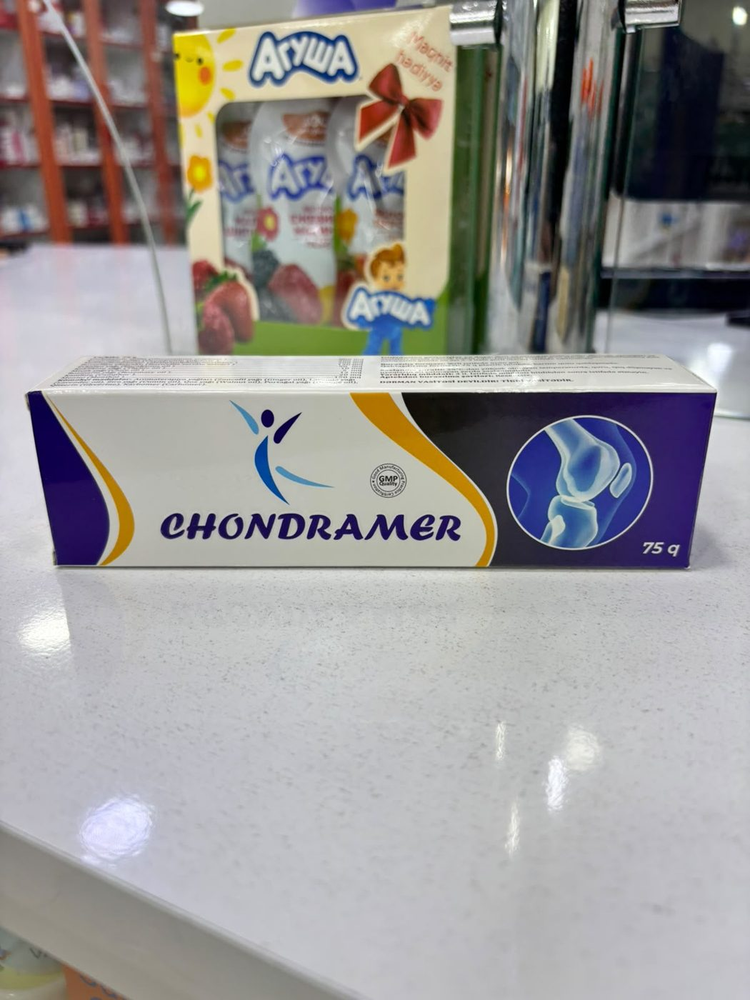

BAQM
Karno Mer
Ürək-damar sisteminin fəaliyyətini yaxşılaşdırmaq məqsədilə tövsiyə olunan vasitə.
Oynaq və əzələ ağrıları üçün istifadə olunan gel — 75 q.

Oynaq və əzələ ağrıları üçün istifadə olunan tibbi vasitə.
| Maddə | Miqdar |
|---|---|
| Glukozamin sulfatGlucosamine sulphate | 800 mq |
| Xondroitin sulfatChondroitin sulphate | 200 mq |
| MetilsulfonilmetanMethylsulphonylmethane | 200 mq |
| Bosvelliya ekstraktıBoswellia serrata extract | 120 mq |
| Evkalipt yağıEucalyptus oil | 50 mq |
| Kəklikotu yağıThyme oil | 10 mq |
| Mixək yağıClove oil | 5 mq |
| Rozmarin yağıRosemary oil | 12 mq |
| KamforaCamphor | 20 mq |
| MentolMenthol | 150 mq |
Aromaterapiya yağları (zəncəfil, lavanda, zirə, qoz, portağal yağı), qliserin, karbomer.
25 °C-dən yüksək olmayan temperaturda, quru, işıq düşməyən və uşaqların əli çatmayan yerdə.
Şəkli böyütmək üçün üzərinə klikləyin.
Ürək-damar sisteminin fəaliyyətini yaxşılaşdırmaq məqsədilə tövsiyə olunan vasitə.

D3 və K2 vitaminlərinin əlavə mənbəyi — 15 ml damcı məhlul (50 000 BV).

İmmun sistemin fəaliyyətini yaxşılaşdırmaq məqsədilə — 10 flakon × 15 ml məhlul.